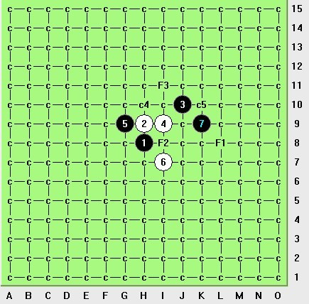
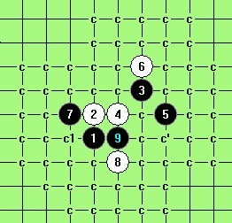

疏一，第三强白八，给出您的应对，谢谢。
#1 疏一，第三强白八，给出您的应对，谢谢。 作者：换你一笑 发表时间：2012-12-18 0:00:45
请教大师们了。
#2 Re:疏一，第三强白八，给出您的应对，谢谢。 作者：屏蔽 发表时间：2012-12-18 0:38:03
防一手再说。#3 Re:疏一，第三强白八，给出您的应对，谢谢。 作者：罗源棋手 发表时间：2012-12-18 12:16:28
为什么这是第三强的白8？求解。#4 Re:罗源棋手【==Re:疏一，第三强白八，给出您的应对，谢谢。==】 作者：换你一笑 发表时间：2012-12-18 13:00:35

仅供参考。。。（个人标注）
［ 逆刃 于 2012-12-18 13:20:29 时花20金币送鲜花一朵］
［ 逆刃 于 2012-12-18 13:20:29 时花20金币送鲜花一朵］
［ 逆刃 于 2012-12-18 13:20:29 时花20金币送鲜花一朵］
#5 Re:疏一，第三强白八，给出您的应对，谢谢。 作者：冰雪笑醉 发表时间：2012-12-18 20:52:41
前天晚上看人有这样下的
#6 Re:疏一，第三强白八，给出您的应对，谢谢。 作者：屏蔽 发表时间：2012-12-18 22:31:21
15手抢枪外势［ 换你一笑 于 2012-12-19 1:11:41 时花20金币送鲜花一朵］
［ 换你一笑 于 2012-12-19 1:11:41 时花20金币送鲜花一朵］
［ 换你一笑 于 2012-12-19 1:11:41 时花20金币送鲜花一朵］
#7 Re:疏一，第三强白八，给出您的应对，谢谢。 作者：冰雪笑醉 发表时间：2012-12-18 23:23:09
这样捏
［ 换你一笑 于 2012-12-19 1:11:09 时花20金币送鲜花一朵］
［ 换你一笑 于 2012-12-19 1:11:09 时花20金币送鲜花一朵］
［ 换你一笑 于 2012-12-19 1:11:09 时花20金币送鲜花一朵］
#8 Re:换你一笑【==Re:罗源棋手【==Re:疏一，第三强白八，给出您的应对，谢谢。==】==】 作者：三鹿十八碗 发表时间：2012-12-24 6:52:24
3上面的不会杀，楼主或哪位高手可否给出大体的提示？
［此帖子已被 三鹿十八碗 在 2012-12-24 8:44:01 编辑过］
#9 Re:疏一，第三强白八，给出您的应对，谢谢。 作者：华夏使者 发表时间：2012-12-24 12:00:51
小道消息；这个11好像已经地毯了［此帖子已被 华夏使者 在 2012-12-24 12:04:27 编辑过］
#10 Re:三鹿十八碗【==Re:换你一笑【==Re:罗源棋手【==Re:疏一，第三强白八，给出您的应对，谢谢。==】==】==】 作者：换你一笑 发表时间：2012-12-24 19:32:06

你问的这个败八通这个，我把六打的这个败六一起发了，见下谱，有问题回帖，或者联系QQ1075817723
 疏星六打败六通疏星一打败八.rar
疏星六打败六通疏星一打败八.rar
#11 Re:华夏使者【==Re:疏一，第三强白八，给出您的应对，谢谢。==】 作者：换你一笑 发表时间：2012-12-24 19:34:55
呵呵，俺也听说过了，只是黑怎么应对的不知道。
有一种走法是先活G10这个点，然后防白棋。
［此帖子已被 换你一笑 在 2012-12-24 19:40:44 编辑过］
#12 Re:疏一，第三强白八，给出您的应对，谢谢。 作者：棋元道 发表时间：2012-12-25 23:21:05
我最近为什么下载不了？
#13 Re:疏一，第三强白八，给出您的应对，谢谢。 作者：棋元道 发表时间：2012-12-26 17:41:07
2上面的8不会#14 Re:疏一，第三强白八，给出您的应对，谢谢。 作者：棋元道 发表时间：2012-12-26 19:16:39
#15 Re:棋元道【==Re:疏一，第三强白八，给出您的应对，谢谢。==】 作者：屏蔽 发表时间：2012-12-26 23:35:08
引用：ShowPost.asp?ThreadID=19001
原文由 棋元道 发表于 2012-12-26 17:41:07 :
2上面的8不会
#16 Re:疏一，第三强白八，给出您的应对，谢谢。 作者：游戏人间 发表时间：2012-12-27 0:00:13
#17 Re:疏一，第三强白八，给出您的应对，谢谢。 作者：唯一的色彩 发表时间：2013-1-23 16:23:42
5楼的14地毯了
［此帖子已被 唯一的色彩 在 2013-1-23 16:25:17 编辑过］
［此帖子已被 唯一的色彩 在 2013-1-23 16:26:56 编辑过］
［ 换你一笑 于 2013-1-23 22:01:40 时花20金币送鲜花一朵］
［ 换你一笑 于 2013-1-23 22:01:40 时花20金币送鲜花一朵］
［ 换你一笑 于 2013-1-23 22:01:40 时花20金币送鲜花一朵］
［ 换你一笑 于 2013-1-23 22:01:40 时花20金币送鲜花一朵］
［ 换你一笑 于 2013-1-23 22:01:40 时花20金币送鲜花一朵］
［ 换你一笑 于 2013-1-23 22:21:24 时花20金币送鲜花一朵］
［ 换你一笑 于 2013-1-23 22:21:24 时花20金币送鲜花一朵］
［ 换你一笑 于 2013-1-23 22:21:24 时花20金币送鲜花一朵］
［ 换你一笑 于 2013-1-23 22:21:24 时花20金币送鲜花一朵］
［ 换你一笑 于 2013-1-23 22:21:24 时花20金币送鲜花一朵］
［ 换你一笑 于 2013-1-23 22:21:24 时花20金币送鲜花一朵］
［ 换你一笑 于 2013-1-23 22:21:24 时花20金币送鲜花一朵］
#18 Re:疏一，第三强白八，给出您的应对，谢谢。 作者：爱好者友 发表时间：2013-1-23 18:30:04
下了，好好学学啦